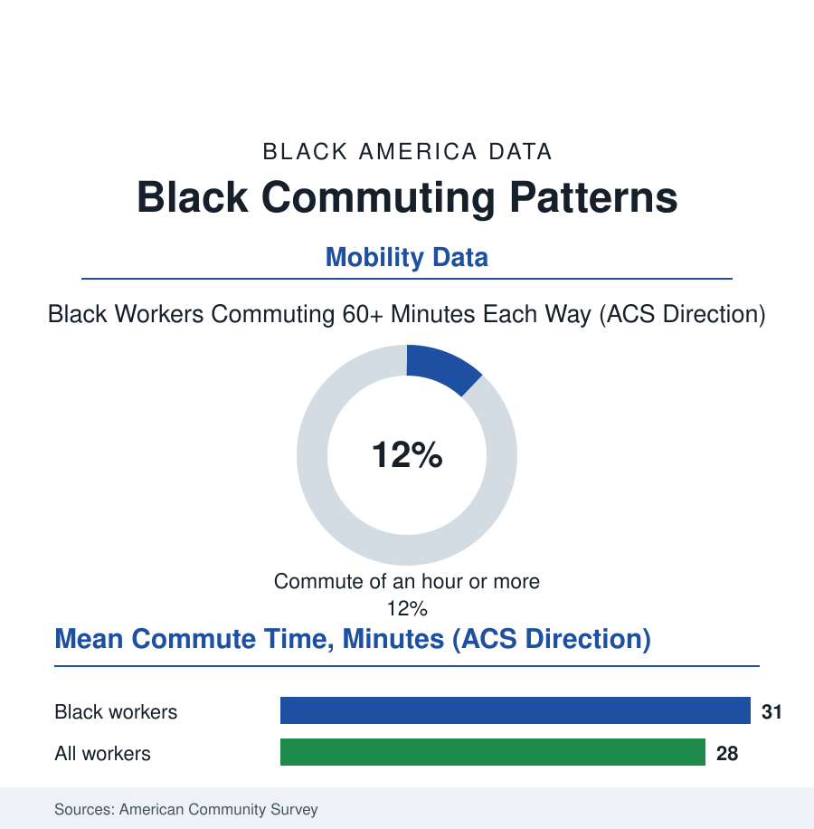

Black Census
The Longest Commute: Time, Transit, and the Black Work Trip
Black workers spend more time getting to work than any other group in America — the commute as a daily tax of hours, levied by the map of where the jobs went and where the housing stayed. The commute file.

The census asks every worker how long the trip to work takes, and the answers compose one of the quietest inequalities in this book: Black workers' commutes run the longest in America — modestly longer on average, dramatically longer in the tail — a daily levy of the scarcest thing a working household has, collected by the geography of the last century. This article reads the commute file.
The Map That Makes the Minutes
The mechanisms are the atlas's geography stated in minutes: the spatial mismatch the urban literature named sixty years ago — the jobs suburbanizing to the beltway's office parks and logistics fields while the housing of this book's neighborhoods, priced and zoned and inherited, stayed in the city — the commute as the distance between the two decisions, paid by the worker in the currency of the day. The mode rows write the gradient: the transit dependence of the Black workforce (the bus and rail shares multiples of the national in the great metros) meeting the transit system's own map — the bus network's frequencies, the suburb-bound route's absence (the reverse commute's missing last mile, the job at the logistics park reachable by car in twenty minutes and by transit in two hours with a walk on a road without sidewalks), the car-access file's households one repair from the commute's collapse. The time data carry the consequences the file is really about: the hour-plus tail concentrated in the Black rows of the great metros (the New York and Atlanta and Chicago distributions where the Black super-commuter is a demographic category of his own), the childcare arithmetic of the family file absorbing the commute's first claim on the day (the 5 a.m. bus dictating the grandmother's shift), the job-acceptance data showing the commute's shadow over the wage file itself — the better job at the far campus declined, rationally, for the nearer worse one, the mismatch taxing the earnings it pretends only to inconvenience. The remote-work era then drew the file's newest map: the laptop occupations' commute abolished entire, their shares by race in the work-from-home data running inverse to the burden — the workers with the longest commutes holding, disproportionately, the jobs that must be done in person, the pandemic's great commute dividend distributed, like the era's other dividends, up the ladder it was meant to flatten.
The Hours, Totaled
The file's closing exercise is simple multiplication, and it is the point: the mean gap of a few minutes, times two trips, times the working year, times a forty-year career, totals in the commute's own unit — the Black worker's extra months of life spent in transit across a working lifetime, the equivalent of years of waking hours against the shortest-commuting groups — time that appears in no wage table and every family's evening. The remedies in the policy data are the map's own: the housing file's missing middle near the job centers, the transit file's suburb-bound routes and the bus's dignity (frequency as the whole ballgame in the ridership research), the employer campuses' shuttle fleets, the land-use file's long game of letting the city reknit. None arrives quickly; the commute is the tax the present pays for the past's map, and its collection is as reliable as the sunrise the 5 a.m. bus is chasing. The census publishes the minutes and moves on. The file stays a moment longer with the arithmetic of what the minutes are: the first shift, unpaid, universal in this population, and over — for the worker stepping off the last bus — exactly when the second one, the paid one, and then the third, the family's, can finally begin.
Reading the Commute Data
The commute file is the census section's clock: inequality measured not in dollars but in the hours no one gets back. The ACS publishes the means. The bus stop at 5 a.m. — the lunch bags, the uniforms, the regulars who know the driver by name — publishes the distribution, and it is the truer document. Ask anyone standing at it. They can tell you the schedule from long hard daily memory, because the schedule is their life.
More in Black Census
The Black Population of the United States: Size, Definitions, and Distribution
The Black population of the United States totals 52.8 million — 15.4 percent of the nation. How the Census Bureau defines and counts the population, and where it lives.
Black Median Household Income in the United States
Black median household income stands at $56,490 in the Census Bureau's annual income report — how the figure is measured, how it compares, and what drives it.
The Black Poverty Rate: Levels, Children, and the Long Trend
The official Black poverty rate is 17.1 percent — against 11.1 percent nationally and 7.7 percent for non-Hispanic White Americans. How poverty is measured and what the data show.
Source: U.S. Census Bureau American Community Survey commuting data; Bureau of Transportation Statistics; National Household Travel Survey; Brookings and urban-institute spatial-mismatch research.